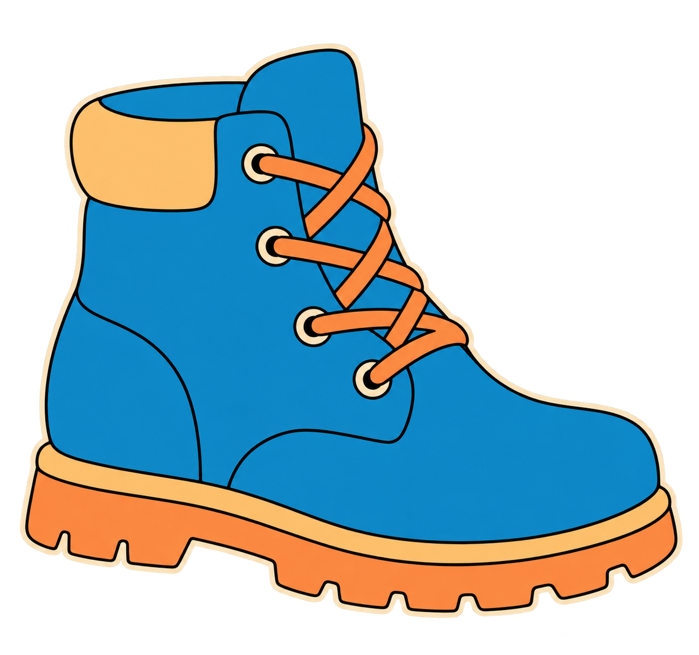
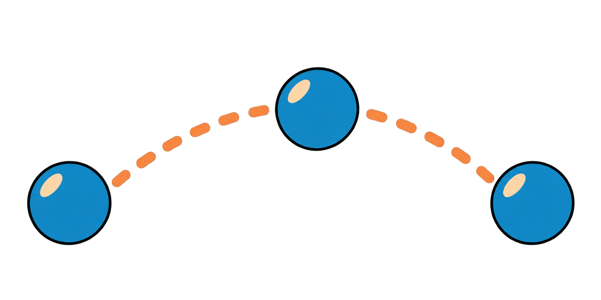

ISOLATE THE
COLOUR.
HSV masks turn a colour rule into visible pixels. Today you will tune a mask, clean it, and track the resulting component.
One HSV range
One cleaned mask
One tracked component
One cleaned mask
One tracked component
HSV masks turn a colour rule into visible pixels. Today you will tune a mask, clean it, and track the resulting component.
Hue identifies colour family; saturation and value help rule out grey, white, or dark pixels.
Run the notebook locally. Trackbars change HSV limits, morphology removes noise, and connected components report the largest object.

Opening removes isolated bright pixels. Closing fills small gaps. Use the smallest operation that makes the component usable.
The largest connected component gives a centroid and area. That is a rule-based tracker, not deep-learning recognition.

Move the coloured object into shadow or glare. Explain whether HSV still separates it from the background.
Finish the evidence card for your rule-based tracker.